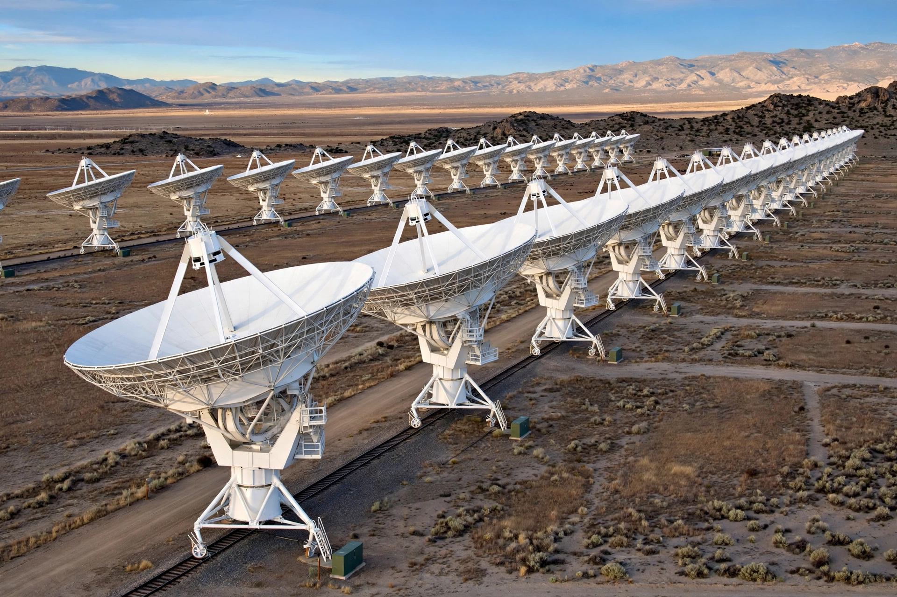

From Wikipedia, the free encyclopedia

| Organisation | National Radio Astronomy Observatory |
|---|---|
| Location | Plains of San Agustin, New Mexico, U.S. |
| Altitude | 2,124 m (6,970 ft) |
| Built | 1973–1980 |
| Telescope style | Interferometer; 27 antennas of 25 m diameter |
| Wavelength | Radio, 0.6–410 cm (50 MHz – 50 GHz after upgrade) |
The Karl G. Jansky Very Large Array (VLA) is a centimeter-wavelength radio astronomy observatory in south-central New Mexico, United States. Operated by the National Radio Astronomy Observatory, it consists of 27 movable dish antennas, each 25 metres (82 ft) in diameter, arranged in a Y-shaped configuration along three rail arms. The antennas work together as an interferometer, electronically synthesising the resolution of a telescope up to 36 kilometres across in its most extended configuration.
Conceived in the 1960s as a successor to earlier radio arrays, the VLA was constructed between 1973 and 1980 and formally dedicated in 1980. It is named in honour of Karl Guthe Jansky, the Bell Telephone Laboratories physicist who in 1932 first detected radio waves from the centre of the Milky Way, founding radio astronomy. A decade-long modernisation completed in 2012 — the Expanded VLA project — replaced the original electronics with wide-band receivers and a powerful new correlator (WIDAR), increasing sensitivity roughly tenfold; the array was rededicated in March 2012 under its present name.
Working in four configurations (A, B, C and D), through which the antennas cycle on standard gauge railway tracks, the VLA observes phenomena from solar and planetary radio emission to star-forming regions, supernova remnants, active galactic nuclei and the cosmic microwave background. It produced key images of the radio jets of distant galaxies and of the environment of the supermassive black hole Sagittarius A*. A major sky survey, the VLA Sky Survey (VLASS), began in 2017. The array's dramatic appearance on the high desert Plains of San Agustin has also made it a popular filming location, most famously in the 1997 film Contact.
See also: Kashmir (region pages)